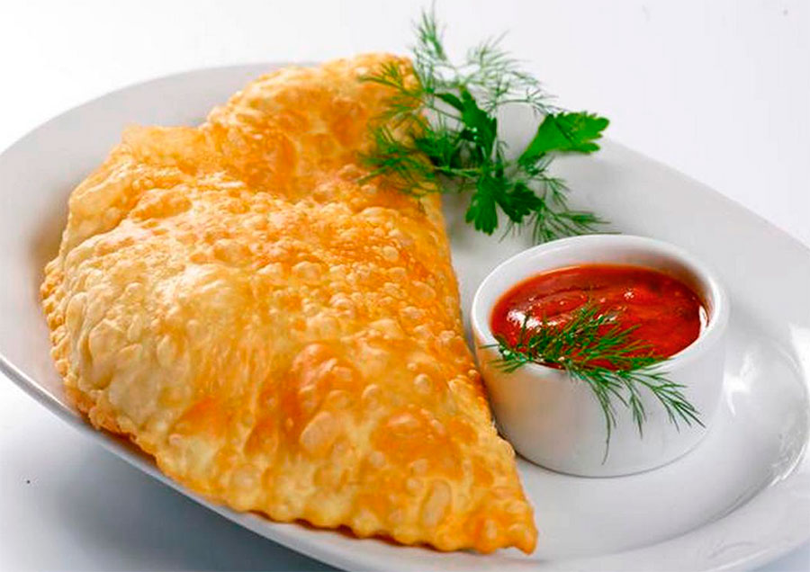

Ќачинки чебуреков:
- √ов€дина
- —ырна€
- ќвощна€
- »з трех видов м€са
„ебурек

„ебурек Ч это пирожок (или пирог), который готовитс€ из тонкого пресного теста и жаритс€ во фритюре. ≈го традиционна€ начинка Ч это м€сной фарш, приправленный луком и специ€ми, но сегодн€ существуют дес€тки вариаций, включа€ сырные, овощные и даже сладкие чебуреки.
“радиционный чебурек имеет несколько ключевых особенностей:
Ч ’руст€ща€ корочка, котора€ получаетс€ за счет специальной техники приготовлени€ теста.
Ч —очный фарш, который остаЄтс€ нежным благодар€ правильному сочетанию ингредиентов.
Ч —пеции, которые создают уникальный вкус
—лово Ђчебурекї происходит из крымскотатарского €зыка, где оно означает Ђсырой пирогї, что указывает на способ приготовлени€: начинка остаЄтс€ сырой до момента жарки.